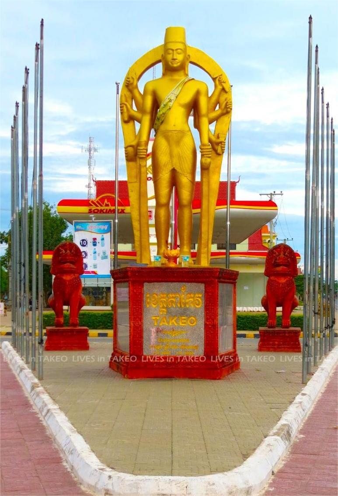

ការពិពណ៏នាអំពី ខេត្តនីមួយៗនៅក្នងប្រទេសកម្ពុជា
ទំព័រដើម
តាកែវ
ភ្នំពេញ
កែប
ព្រះសីហនុ
ស្វាយរៀង
កំពង់ធំ
បាត់ដំបង
ពោធ៏សាត់
សៀមរាប
រតនគីរី
មណ្ឌលគីរី
ក្រចេះ
ត្បូងឃ្មុំ
កំពង់ចាម
ព្រៃវែង
កណ្តាល
ឧត្តរមានជ័យ
កំពង់ឆ្នាំង
កំពង់ស្ពឺ
បន្ទាយមានជ័យ
កោះកុង
ប៉ៃលិន
កំពត
ស្ទឹងត្រែង
ព្រះវិហារ
ទំនាក់ទំនង
ខេត្តតាកែវ

ព័ត៌មានសង្ខេបអំពីខេត្តតាកែវ
> ខេត្តតាកែវ គឺជាខេត្តមួយដែលស្ថិតនៅភាគខាងត្បូងនៃប្រទេសកម្ពុជា។ ស្ថិតនៅខាងលិចទន្លេបាសាក់ ខេត្តតាកែវ មានព្រំប្រទល់ជាប់នឹងខេត្តកំពត ខាងលិចជាប់ ខេត្តកំពង់ស្ពឺខាងជើងឆៀងខាងលិច និងខេត្តកណ្តាលនៅខាងជើងនិងខាងកើត។ ហើយព្រំប្រទល់ភាគខាងត្បូងរបស់ខេត្តគឺព្រំដែនអន្តរជាតិជាមួយវៀតណាម(ខេត្តមាត់ជ្រូក)។ ទីក្រុងខេត្តដែលទើបនឹងត្រូវបានគេស្គាល់ថាជាទីរួមខេត្តដូនកែវ (អតីតហៅថាក្រុងតាកែវ) គឺជាទីក្រុងតូចមួយមានប្រជាជនសរុប ៣៩ ១៨៦ នាក់។ ខេត្តតាកែវគឺជាស្លាកស្នាមនៃវប្បធម៌ខ្មែរ ដោយសារតែជាអតីតនគរវ្នំនិងអាណាចក្រចេនឡាស្ថិតនៅកណ្តាលតំបន់។
> ខេត្តតាកែវគឺជាខេត្ដមួយស្ថិតនៅភាគខាងត្បូងនៃប្រទេសកម្ពុជា។ ខេត្តនេះមានព្រំប្រទល់ខាងលិចជាប់នឹងខេត្តកំពត ភាគពាយ័ព្យជាប់នឹងខេត្តកំពង់ស្ពឺ ខាងជើងនិងខាងកើតជាប់ខេត្តកណ្ដាល និងភាគខាងត្បូងជាប់ជាមួយព្រំដែនអន្ដរជាតិប្រទេសវៀតណាម។ ខេត្តតាកែវមានផ្ទៃដីសរុប ៣,៦៨០.១៥ គីឡូម៉ែត្កការេ[២]។ ទីរួមខេត្តនៃខេត្តតាកែវគឺក្រុងដូនកែវ ដែលជាក្រុងតូចមួយមានប្រជាជន ៣៩,១៨៦ នាក់។ បើយើងធ្វើដំណើរពីភ្នំពេញទៅកាន់ទីរួមខេត្តតាកែវលើកំណាត់ផ្លូវជាតិលេខ ២ និងលេខ៣ គេនឹងបានឃើញស្ថានភាពប្រជាពលរដ្ឋ ការប្រកបរបររកស៊ីរបស់ពួកគេនៅក្នុងខេត្តនេះ។ មិនតែប៉ុណ្ណោះ គេក៏អាចធ្វើដំណើរតាមផ្លូវជាតិលេខ២ផងដែរ ដែលមានចម្ងាយផ្លូវប្រហែល៧៨ គីឡូម៉ែត្រ។
> តាមជំរឿនប្រជាជននៅថ្ងៃទី៣ ខែមីនា ឆ្នាំ១៩៩៨ ខេត្តតាកែវមានចំនួន ៧៩០,១៦៨នាក់ និងជំរឿនថ្ងៃទី៣ ខែមីនា ឆ្នាំ២០១៨ ប្រជាជនមានចំនួន ៨៤៤,៩០៦នាក់។ តាមការធ្វើជំរឿនប្រជាជនកម្ពុជានៅថ្ងៃទី៣ ខែមីនា ឆ្នាំ២០១៩ បានបង្ហាញថា ខេត្តតាកែវមានប្រជាជនសរុបចំនួន ៨៩៩,៤៨៥នាក់ និងមានដង់ស៊ីតេចំនួន ២៥២.៥នាក់ក្នុងមួយគីឡូម៉ែត្រការ៉េ។ បើប្រៀបធៀបរវាងចន្លោះឆ្នាំ២០០៨ ដល់ឆ្នាំ២០១៩ មានកើនឡើងចំនួន ០.៥៧%[៣]។
> ខេត្តតាកែវ មាន 9 ស្រុក និង 1 ក្រុង (ក្រុងដូនកែវ) :
- ស្រុកបាទី
- ស្រុកបូរីជលសារី
- ស្រុកគីរីវង់
- ស្រុកកោះអន្លង់ចិនចា
- ស្រុកព្រៃកប្បាស
- ស្រុកសំរោង
- ស្រុកត្រាំកក់
- ស្រុកដូនកែវ
- ស្រុកអង្គរបុរី
- ក្រុងដូនកែវ (ជាទីរដ្ឋបាលនៃខេត្តតាកែវ)